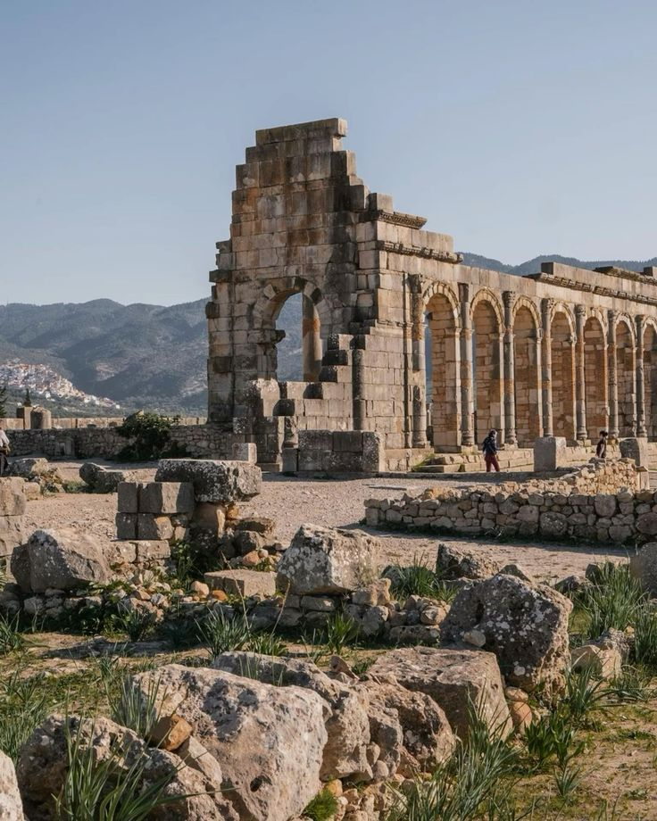
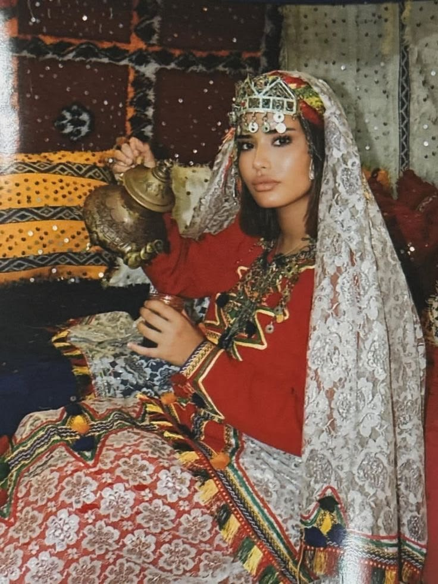

The history of Morocco begins with the **Amazigh (Berber) people**, who inhabited the region long before recorded history. The Berbers established early kingdoms and traded with Phoenician and Roman civilizations.
Key Highlights:
- Amazigh Kingdoms: The Berbers were organized into tribes and kingdoms, such as the **Massaesyli** and **Mauri**, who resisted Roman expansion.
- Roman Influence: Morocco was part of the Roman Empire as **Mauretania Tingitana**, with cities like **Volubilis** and **Lixus** flourishing as centers of trade and culture.
- Arrival of Islam: In the 7th century, Arab armies brought Islam to Morocco, blending with Berber traditions to create a unique cultural identity.

Volubilis: A Roman city in Morocco

Amazigh (Berber) Woman in Traditional Dress